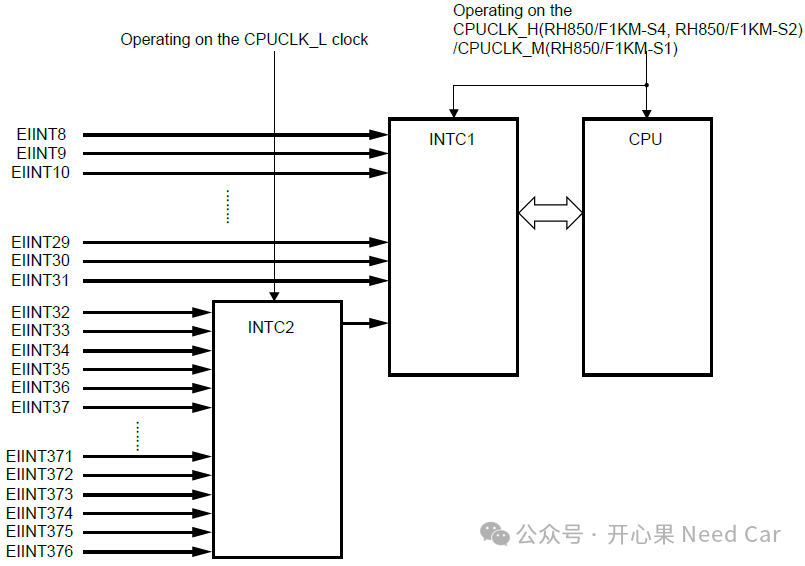
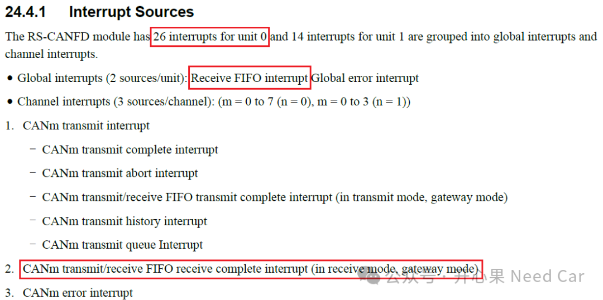
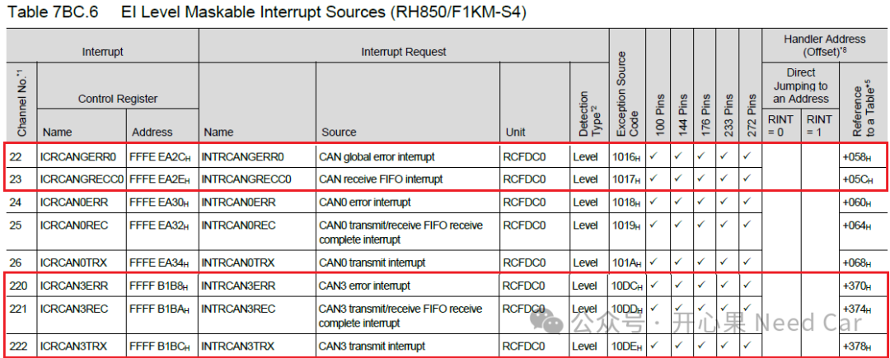
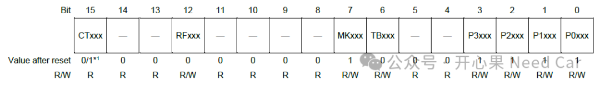
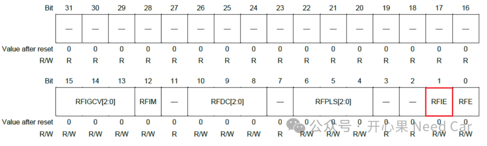

开心果 Need Car · 2026-04-24T06:21:00+08:00 · 微信原文
在汽车电子领域，CAN总线通信的可靠性和实时性至关重要。然而，在基于瑞萨电子的RH850/F1KM系列微控制器实际开发中，工程师经常遇到CAN接收中断配置复杂、中断无法正常触发等问题。本文基于RH850/F1KM硬件手册和实际开发经验，系统梳理CAN接收中断的配置要点和调试方法。
1.中断系统架构概述
RH850/F1KM采用多层次中断控制系统。中断分为三个级别：
FE（Fast Exception）级不可屏蔽中断（NMI，Non‑Maskable Interrupt）：最高优先级，用于严重错误处理
FE级可屏蔽中断：快速外部中断，使用FERET指令返回
EI（External Interrupt）级可屏蔽中断：外部中断，由INTC1和INTC2控制器管理，使用EIRET指令返回

CAN接收中断通常属于EI级可屏蔽中断，对于RH850/F1KM的RS-CANFD模块，有26个中断源。但是，并没有预期的接收完成中断（receive complete interrupt）。不过，可以使用Receive FIFO interrupt进行接收报文的中断触发。RS-CANFD模块中断源描述如下：

相对发送来说，接收中断需要格外注意。因为手册的描述有时会困惑我们开发。
2. CAN模块级配置
RSCANFD模块为每个通道提供独立的中断控制。以Channel 3为例，关键寄存器包括：
通道中断使能寄存器（RCFDC0CFDC3IER）：必须使能接收FIFO中断位（通常为RFIE或类似位）
FIFO配置寄存器（RCFDC0CFDCFCCk）：配置FIFO深度、数据长度和中断使能。如代码RCFDC0CFDCFCC0 |= 0x00401072中，低字节的0x72可能包含中断使能设置，但需确认接收中断是否单独使能
3. 中断控制器（INTC）配置
每个CAN中断在INTC中对应特定的中断通道号。配置步骤：
Step1：确定中断通道号。查阅手册"Interrupt Sources"表格，找到CAN3接收中断对应的ICUM中断号。这里可以使能的对应中断如下所示：

由于本文使用FIFO接收，所以，INTRCANGRECC0（对应的中断号是23）需要配置和使能。
Step2：配置通道控制寄存器（ICUM_ICxxx）。MKxxx位必须设为0（取消屏蔽），P2xxx-P0xxx位设置合适优先级（0最高，7最低），CTxxx位设置检测类型（CAN中断为Level触发），TBxxx设置为1，采用Table方式查找中断例程。

*((uint16_t *)0xFFFFB1B8) = 0x8046;*((uint16_t *)0xFFFFB1BA) = 0x8047;*((uint16_t *)0xFFFFB1BC) = 0x8048;*((uint16_t *)0xFFFEEA2E) = 0x8049;
Step3：检查全局中断掩码寄存器（ICUM_IMRm）：确保对应通道的EIMK位为0。
Step4：中断头文件使能对应的中断（比如：dr7f701649_irq.h），示意如下：
..................
Step5：启动文件（本文dr7f701649_startup.850）配置中断例程，示意如下：
.......offset (IRQ_TABLE_START+0x005c).extern _RCAN0_GRECC_ISR.word _RCAN0_GRECC_ISR.word __unused_isr.......offset (IRQ_TABLE_START+0x0370).extern _RCAN3_ERR_ISR.word _RCAN3_ERR_ISR.word __unused_isr.offset (IRQ_TABLE_START+0x0374).extern _RCAN3_REC_ISR.word _RCAN3_REC_ISR.word __unused_isr.offset (IRQ_TABLE_START+0x0378).extern _RCAN3_TRX_ISR.word _RCAN3_TRX_ISR.word __unused_isr......
注意：中段例程在启动文件中有前缀下划线，比如：_RCAN0_GRECC_ISR。
Step6：中断服务例程（ISR）实现。以RCAN0_GRECC_ISR为例（使用GHS编译器），ISR实现需注意以下关键点：
Canfd_FrameType CANFDRxFIFOData;void RCAN0_GRECC_ISR(void){Canfd_FrameType* pRxFIFOBuffer;/* 清除中断请求 */RCFDC0CFDRFSTS0LL &= 0x07;/* 读取接收FIFO缓冲区中的消息 */while (RCFDC0CFDRFSTS0LH != 0){pRxFIFOBuffer = (Canfd_FrameType*) &(RCFDC0CFDRFID0);CANFDRxFIFOData = pRxFIFOBuffer[0];RCFDC0CFDRFPCTR0LL = 0xff;}}
Step7：CAN模块初始化流程中，确保接收中断的使能。对应RCFDCnCFDRFCCx寄存器的RFIE（Receive FIFO Interrupt Enable）使能，示意如下：

操作示意：
RCFDC0CFDCFCC0 |= 0x00400072; 最后RCFDC0CFDCFCC0 的RFE位域使能
RCFDC0CFDRFCC0 |= 0x01; //set RxFIFO0 to operation mode （一）调试实践：中断已置位但未触发
当接收FIFO中断标志（CFRXIF）已置位但ISR未执行时，可按以下流程排查：
第一步：验证中断使能链
CAN模块中断使能：检查RCFDC0CFDC3IER和RCFDC0CFDCFCC0中的接收中断使能位
ICUM通道屏蔽：确认ICUM_ICxxx.MKxxx = 0
CPU全局中断：确保PSW.EP = 0且PMR优先级低于接收中断优先级
第二步：检查中断向量链接
确认中断向量表：在启动文件或向量表中，将INTC中断通道号正确指向RCAN0_GRECC_ISR
验证编译器指令：#pragma ghs interrupt（如果使用GHS）确保函数被识别为中断处理程序
检查链接脚本：确保ISR代码位于正确的内存区域
总结
RH850/F1KM的CAN接收中断配置是一个系统工程，涉及CAN模块、中断控制器和软件框架的协同工作。成功的关键在于：
完整的中断使能链：从CAN模块到INTC再到CPU全局中断
正确的向量链接：确保中断向量指向正确的ISR
彻底的标志管理：在ISR中清除所有相关中断标志
系统的调试方法：使用寄存器读取、GPIO调试引脚等方法验证中断流程
往期精彩回顾